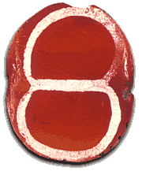

How do we know?The Indus Valley is considered to be the birthplace of a technique of painting white designs onto carnelian beads.Experts believe that a craftsman painted designs onto beads with a white paste, then heated the beads. The heating of the beads fused the design into the stone. The result was a red bead with a white design. Many beads of this type have been found at Indus Valley sites. They have also been found in far-away places such as the Sumerian city of Ur, in southern Mesopotamia. 
This bead was found in one of the 'Royal Tombs of Ur'. Thus, evidence of trading links between the Indus Valley and Mesopotamia exists from as early as about 2600 B.C. |